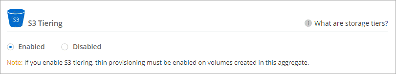

Release notes
Release notes
Tiering inactive data to low-cost object storage
 Suggest changes
Suggest changes You can reduce storage costs for Cloud Volumes ONTAP by combining an SSD or HDD performance tier for hot data with an object storage capacity tier for inactive data. Data tiering is powered by FabricPool technology. For a high-level overview, see Data tiering overview.
To set up data tiering, you need to do the following:
 Choose a supported configuration
Choose a supported configurationMost configurations are supported. If you have a Cloud Volumes ONTAP system running the most recent version, then you should be good to go. Learn more.
 Ensure connectivity between Cloud Volumes ONTAP and object storage
Ensure connectivity between Cloud Volumes ONTAP and object storage-
For AWS, you’ll need a VPC Endpoint to S3. Learn more.
 Ensure that you have an aggregate with tiering enabled
Ensure that you have an aggregate with tiering enabledData tiering must be enabled on an aggregate in order to enable data tiering on a volume. You should be aware of the requirements for new volumes and for existing volumes. Learn more.
 Choose a tiering policy when creating, modifying, or replicating a volume
Choose a tiering policy when creating, modifying, or replicating a volumeBlueXP prompts you to choose a tiering policy when you create, modify, or replicate a volume.

|
What’s not required for data tiering?
|
Configurations that support data tiering
You can enable data tiering when using specific configurations and features.
Support in AWS
-
Data tiering is supported in AWS starting with Cloud Volumes ONTAP 9.2.
-
The performance tier can be General Purpose SSDs (gp3 or gp2) or Provisioned IOPS SSDs (io1).
Tiering data to object storage is not recommended when using Throughput Optimized HDDs (st1).
Feature interoperability
-
Data tiering is supported with encryption technologies.
-
Thin provisioning must be enabled on volumes.
Requirements
Depending on your cloud provider, certain connections and permissions must be set up so that Cloud Volumes ONTAP can tier cold data to object storage.
Requirements to tier cold data to AWS S3
Ensure that Cloud Volumes ONTAP has a connection to S3. The best way to provide that connection is by creating a VPC Endpoint to the S3 service. For instructions, see AWS Documentation: Creating a Gateway Endpoint.
When you create the VPC Endpoint, be sure to select the region, VPC, and route table that corresponds to the Cloud Volumes ONTAP instance. You must also modify the security group to add an outbound HTTPS rule that enables traffic to the S3 endpoint. Otherwise, Cloud Volumes ONTAP cannot connect to the S3 service.
If you experience any issues, see AWS Support Knowledge Center: Why can’t I connect to an S3 bucket using a gateway VPC endpoint?.
Enabling data tiering after implementing the requirements
BlueXP creates an object store for cold data when the system is created, as long as there are no connectivity or permissions issues. If you didn’t implement the requirements listed above until after you created the system, then you’ll need to manually enable tiering through the API or System Manager, which creates the object store.
|
|
The ability to enable tiering through the BlueXP user interface will be available in a future Cloud Volumes ONTAP release. |
Ensuring that tiering is enabled on aggregates
Data tiering must be enabled on an aggregate in order to enable data tiering on a volume. You should be aware of the requirements for new volumes and for existing volumes.
-
New volumes
If you’re enabling data tiering on a new volume, then you don’t need to worry about enabling data tiering on an aggregate. BlueXP creates the volume on an existing aggregate that has tiering enabled, or it creates a new aggregate for the volume if a data tiering-enabled aggregate doesn’t already exist.
-
Existing volumes
If you want to enable data tiering on an existing volume, then you’ll need to ensure that data tiering is enabled on the underlying aggregate. If data tiering isn’t enabled on the existing aggregate, then you’ll need to use System Manager to attach an existing aggregate to the object store.
-
Open the working environment in BlueXP.
-
Click the Aggregates tab.
-
Navigate to the desired tile and verify whether tiering is enabled or disabled on the aggregate.
-
In System Manager, click Storage > Tiers.
-
Click the action menu for the aggregate and select Attach Cloud Tiers.
-
Select the cloud tier to attach and click Save.
You can now enable data tiering on new and existing volumes, as explained in the next section.
Tiering data from read-write volumes
Cloud Volumes ONTAP can tier inactive data on read-write volumes to cost-effective object storage, freeing up the performance tier for hot data.
-
In Volumes tab under the working environment, create a new volume or change the tier of an existing volume:
Task Action Create a new volume
Click Add New Volume.
Modify an existing volume
Select the desired volume tile, click Manage volume to access the Manage Volumes right-side panel, and then click Advanced actions and Change tiering policy under the right panel.
-
Select a tiering policy.
For a description of these policies, see Data tiering overview.
Example
BlueXP creates a new aggregate for the volume if a data tiering-enabled aggregate does not already exist.
Tiering data from data protection volumes
Cloud Volumes ONTAP can tier data from a data protection volume to a capacity tier. If you activate the destination volume, the data gradually moves to the performance tier as it is read.
-
From the left navigation menu, select Storage > Canvas.
-
On the Canvas page, select the working environment that contains the source volume, and then drag it to the working environment to which you want to replicate the volume.
-
Follow the prompts until you reach the tiering page and enable data tiering to object storage.
Example

For help with replicating data, see Replicating data to and from the cloud.
Changing the storage class for tiered data
After you deploy Cloud Volumes ONTAP, you can reduce your storage costs by changing the storage class for inactive data that hasn’t been accessed for 30 days. The access costs are higher if you do access the data, so you must take that into consideration before you change the storage class.
The storage class for tiered data is system wide—it’s not per volume.
For information about supported storage classes, see Data tiering overview.
-
From the working environment, click the menu icon and then click Storage Classes or Blob Storage Tiering.
-
Choose a storage class and then click Save.
Changing the free space ratio for data tiering
The free space ratio for data tiering defines how much free space is required on Cloud Volumes ONTAP SSDs/HDDs when tiering data to object storage. The default setting is 10% free space, but you can tweak the setting based on your requirements.
For example, you might choose less than 10% free space to ensure that you are utilizing the purchased capacity. BlueXP can then purchase additional disks for you when additional capacity is required (up until you reach the disk limit for the aggregate).

|
If there isn’t sufficient space, then Cloud Volumes ONTAP can’t move the data and you might experience performance degradation. Any change should be done with caution. If you’re unsure, reach out to NetApp support for guidance. |
The ratio is important for disaster recovery scenarios because as data is read from the object store, Cloud Volumes ONTAP moves the data to SSDs/HDDs to provide better performance. If there isn’t sufficient space, then Cloud Volumes ONTAP can’t move the data. Take this into consideration when changing the ratio so that you can meet your business requirements.
-
In the upper right of the BlueXP console, click the Settings icon, and select Connector Settings.
-
Under Capacity, click Aggregate Capacity Thresholds - Free Space Ratio for Data Tiering.
-
Change the free space ratio based on your requirements and click Save.
Changing the cooling period for the auto tiering policy
If you enabled data tiering on a Cloud Volumes ONTAP volume using the auto tiering policy, you can adjust the default cooling period based on your business needs. This action is supported using the API and CLI only.
The cooling period is the number of days that user data in a volume must remain inactive before it is considered "cold" and moved to object storage.
The default cooling period for the auto tiering policy is 31 days. You can change the cooling period as follows:
-
9.8 or later: 2 days to 183 days
-
9.7 or earlier: 2 days to 63 days
-
Use the minimumCoolingDays parameter with your API request when creating a volume or modifying an existing volume.